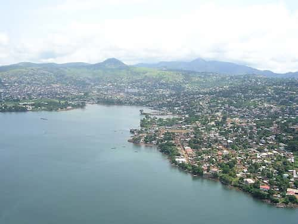

Freetown (Krio: Fritɔun) is the capital and largest city of Sierra Leone. It is a major port city on the Atlantic Ocean and is located in the Western Area of the country.
Freetown is Sierra Leone's major urban, economic, financial, cultural, educational and political centre, as it is the seat of the Government of Sierra Leone. The population of Freetown was 1,347,559 as of the 2024 census
